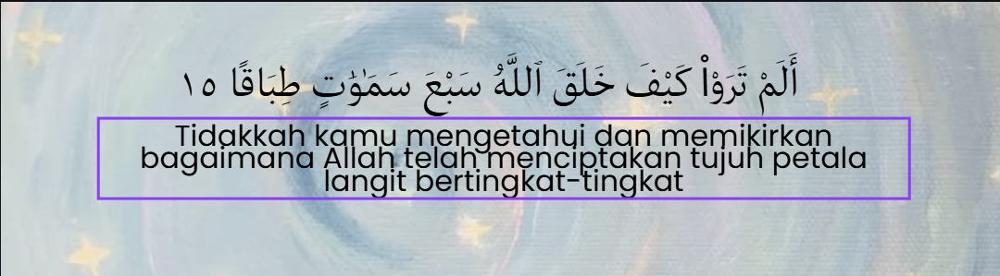

Fenomena menatal skrin telefon pintar. Selama berjam-jam. Bukan nak jadi hipokrit, tapi saya pun termasuk juga, (dahulu). Sebab sebenarnya impak dia sangat-sangat buruk.

Ada satu fenomena baru yang sangat-sangat pelik meracun masyarakat kita. Yang peliknya fenomena ini sangat diterima masyarakat tak kisah lah umur berapa pun kita. Awak tua? boleh Awak muda boleh? Awak baru lahir? Boleh!
Fenomena menatal skrin telefon pintar. Selama berjam-jam. Bukan nak jadi hipokrit, tapi saya pun termasuk juga, (dahulu). Sebab sebenarnya impak dia sangat-sangat buruk.
Setiap kali kalian menatal telefon pintar, lebih-lebih lagi sosial media seperti TikTok, masalah yang paling universal adalah, anda seakan-akan tidak dapat berhenti. Anda seperti hanyut dengan algoritm dan tidak cakna dengan masa. Tiba-tiba bau ikan dia atas api dah terbakar.Anda sebenarnya diprogramkan untuk menjadi seperti itu.
Sosial media menggunakan ide "limitless scroll" yang membawaksa maksud skrol yang tiada penghujung. Setiap kali anda skrol, pasti akan keluar video dari pelbagai latar belakang. Ini bermain dengan trik psikologi, membuatkan anda tidak sedar berapa lama anda sudah meluangkan masa bersama telefon bimibit.
Memetik petikan dari The Guardian, konsep sosial media menyebabkan pengguna menjadi ketagih disebabkan oleh dopamin. Dopamin adalah sejenis hormon yang dirembeskan oleh otak sebagai bentuk hadiah atau reward. Sebgai contoh, dopamin dirembes saat aktiviti
bersukan atau melakukan hobi.
Dengan sosial media, ia meransang perembesan dopamin, setiap kali anda skrol. Ini kerana algorithm yang dibina turut mereplika elemen kejutan, membuatkan manusia terusan skrol untuk mendapatkan hormon dopamin.
Jadi apa isu dari perkara ini? Disebabkan dopamin yang dirembeskan bersifat segera, dan pengguna akan mencari-cari lebih banyak sumber dopamin untuk merasa puas. Akhirnya menyebabkan aktiviti-aktivit yang mengambil masa dan tenaga seperti bersukan, bersosial dan menyelesaikan kerja menjadi sesuatu yang semakin payah. Kerana badan akan menagih dan menjadi tak sabar kerana tahu ada cara yang lebih mudah untuk mendapatkan sumber dopamin.
Ditambah lagi dengan video-video yang disajikan bersifat video pendek, menyebabkan penurunan pada tempoh masa fokus pengguna sosial media. Maka tidak hairan kebanhyakan kanak-kanak kita semakin lama tidak mampu memberikan fokus walaupun sekejap ketika pembelajaran sedang berlansung.
Ramai juga antara kita yang lama-kelamaan tak mampu lagi untuk berfikir secara kritis. Hal ini demikian kerana kita terlampau disajikan dengan video pendk yang tidak memebri manfaat dan nilai. Otak manusia tidak lagi dilatih secara kerap dibandingkan dengan aktiviti-aktiviti seperti membaca. Tambahan lagi, telefon pintar menajdi satu eskapisme untuk melarikan diri dari kebosanan, sedangkan kebosanan merupakan masa untuk manusia berfikir dan merenung. Namun, masa ini dipenuhi dengan konsumsi perkara yang tidak berfaedah.
Ini merupakan satu mimpi buruk kepada umat islam yang mana dasar utama menjadi muslim adalah berfikir. Memalui berfikir, manusia menjumpai tuhan. Melalui berfikir manusia merenung, bagaimana dunia ini dicipta, atas tujuan apa dia berada di bumi dan kemana dia akn pergi.

Lama-kelaman manusia tidak lagi mampu berfikir. Seandainya manusia yang fitrah nya berfikir tidak lagi berfikir, maka adakah dia masih lagi manusia?